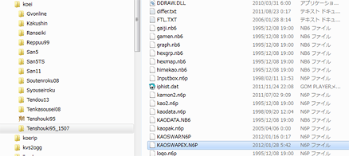

天翔記では武将の人数が1332人までと定められていますが、これを1932人まで拡張する機能です。
1932人の武将モードにするためには、天翔記ディレクトリをコピーし、もうひとつ別の天翔記を用意しましょう!!
下図の例は、通常の天翔記ディレクトリ｢tenshouki95｣をコピーして、｢tenshouki_1507｣というディレクトリを用意したものです。

KAOSWAPEX.N6Pとは、8色の顔グラの1932人版です。
又、TSModはこのファイルを発見することで、自動的に1932人専用のモードへと切り替えます。
1332人用のKAOSWAP.N6Pのカスタマイズされた顔情報をそのまま引き継いで、
1932人用のKAOSWAPEX.N6Pを作成するツールは下記のものとなります。
KaoswapFaceImporterは、Kaoswap.n6pでもKaoswapEx.n6pでも関係なく顔を入れ替えることが出来るツールです。
天翔記では武将の人数が1332人までと定められていますが、これを2932人まで拡張する機能です。
KAOSWAPUX.N6P というファイルが存在する際に、このモードに切り替えられます。
考え方等は、KAOSWAPEX.N6P(1932人)モードと同じです。
主に独自の登録武将を制作した際、列伝を増やすと思いますが、
その際の列伝数の計算が自動で行われ列伝が表示されるようにします。